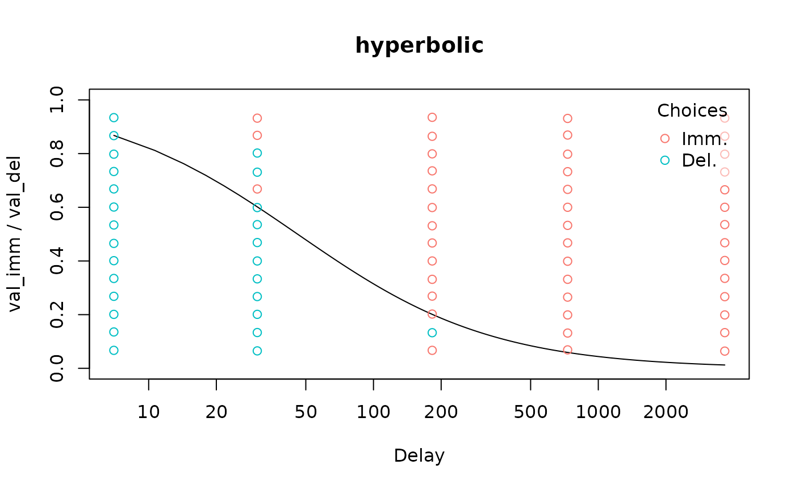

We can visually inspect models using 4 types of plots, controlled by
the type argument to plot(). These plots use
base R graphics and are intended to be generated quickly (e.g., in a
loop over participants) to provide an easy visual check of model fit.
Publication-quality visualizations can be more readily generated using a
dedicated plotting package such as ggplot2.
"summary" plots
For a binary choice model, a “summary” plot displays both the binary choices and the discount curve:
data("td_bc_single_ptpt")
mod <- td_bcnm(td_bc_single_ptpt, discount_function = 'hyperbolic')
plot(mod, type = 'summary')
#> Plotting indifference curve for val_del = 198.314285714286 (mean of val_del from data used to fit model). Override this behaviour by setting the `val_del` argument to plot() or set verbose = F to suppress this message.
The plotting function prints some info, telling us it is plotting the
discount curve corresponding to the average delayed reward value from
the data used for fitting the model. This is only relevant if the
discount curve depends on the delayed reward value (i.e., if magnitude
effects are accounted for). In this case the magnitude effect is not
accounted for, so we can suppress this message using
verbose = F. We can also log-transform the x-axis to
achieve a more even spread between the delays:
plot(mod, type = 'summary', verbose = F, log = 'x')
Additionally, we can plot some information about how stochastic the
individual’s decision making was. The discount curve shows where the
probability of selecting the immediate reward is predicted to be 50%,
but we can plot curves for other probabilities as well. For example, we
can show where the probability of selecting the immediate reward is 10%
and 90% by setting p_lines = c(0.1, 0.9). For more
stochastic decision makers, there will be a greater separation between
these (note that this is not a confidence interval for the
discount curve itself):
For an indifference point model, the discount function is usually plotted alongside the empirical indifference points:
data("td_ip_simulated_ptpt")
mod_ip <- td_ipm(td_ip_simulated_ptpt, discount_function = 'hyperbolic')
plot(mod_ip, type = 'summary', log = 'x', verbose = F)The only exception to this is an indifference point model produced by Kirby scoring, which applies to binary choice data. In this case, the binary choices are displayed.
mod_ip <- kirby_score(td_bc_single_ptpt)
plot(mod_ip, type = 'summary', log = 'x', verbose = F)
However, because indifference point models don’t explicitly model the probabilities of individual choices, the other plot types are not applicable to them.
"endpoints" plots
To visualize how stochastic the decision maker was, we can set
type = 'endpoints'. This plots a psychometric curve of the
probability of selecting the immediate reward as a function of its value
relative to the delayed reward, (i.e., from 0 to 1, the “endpoints” for
which the plot type is named):
plot(mod, type = 'endpoints')
#> gamma parameter (steepness of psychometric curve curve) is scaled by val_del.
#> Thus, the curve will have different steepness for a different value of val_del.
#> Defaulting to val_del = 198.314285714286 (mean of val_del from data used to fit model).
#> Use the `val_del` argument to specify a custom value or use verbose = F to suppress this message.
#> Setting del = 57.8700610123057 (ED50) to center the curve.
#> This can be changed using the `del` argument.This time we get some relevant messages. First, this curve is
centered by default (it corresponds to the delay at which the
indifference point is 0.5). Second, it corresponds to the average
delayed reward value from the data used for fitting the model. The
“logistic” choice rule (used by default) assumes that the “sharpness” of
the psychometric curve increases for higher reward values. We can
customize these using the del and val_del
arguments:
Note that when del corresponds to one of the delays in
the data, the binary choices corresponding to that delay are included in
the plot as points on the y = 0 and y = 1 lines.
"link" plots
Finally, we can plot the probability of selecting the immediate reward against the values of the link function. This is potentially useful for visually detecting outliers.
plot(mod, type = 'link')“rt” plots
For drift diffusion models, we can create a plot of reaction times against the model’s predictions:
ddm <- td_ddm(td_bc_single_ptpt, discount_function = 'exponential',
v_par_starts = 0.01,
beta_par_starts = 0.5,
alpha_par_starts = 3.5,
tau_par_starts = 0.9)
plot(ddm, type = 'rt', q_lines = c(0.05, 0.95), legend = T)Here, we have selected to also view a 90% quantile-based confidence interval around the model’s predictions.